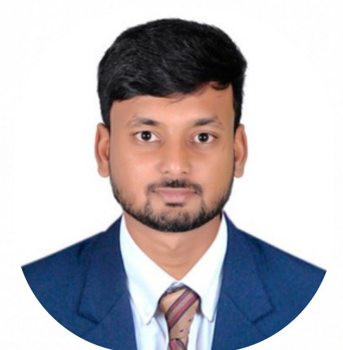

Food safety & quality
Knowledge of ISO 22000, FSSAI regulations, HACCP, GMP, and GHP, with a focus on compliance and consistent products.
I work across dairy processing, quality assurance, and product development, with a focus on hygienic manufacturing and continuous improvement.

Dairy technologist with hands-on experience in milk reception, processing, product quality, food safety, and new product development.
Knowledge of ISO 22000, FSSAI regulations, HACCP, GMP, and GHP, with a focus on compliance and consistent products.
Liquid and UHT milk, ice cream, paneer, butter, ghee, milk powder, dairy whitener, and fermented dairy products.
Academic training and practical work across dairy processing, product development, and food quality.
ICAR–National Dairy Research Institute, SRS · CGPA 8.42
Dairy Science College, Hebbal, Bengaluru · OGPA 8.43
Class 12: 95.83% · Class 10: 93.26%
Karnataka · July–November 2025
Upscaling in-situ production of vitamin B12 in a milk–millet matrix.
Training in milk powder, dairy whitener, market milk, UHT milk, ice cream, paneer, butter, ghee, and fermented dairy products.
Hands-on training in dairy processing and product development.
Interests: Travel, videography and editing, reading, documentaries, blogging, content creation, and banner and label design.
Languages: English, Hindi, Kannada, and Telugu.